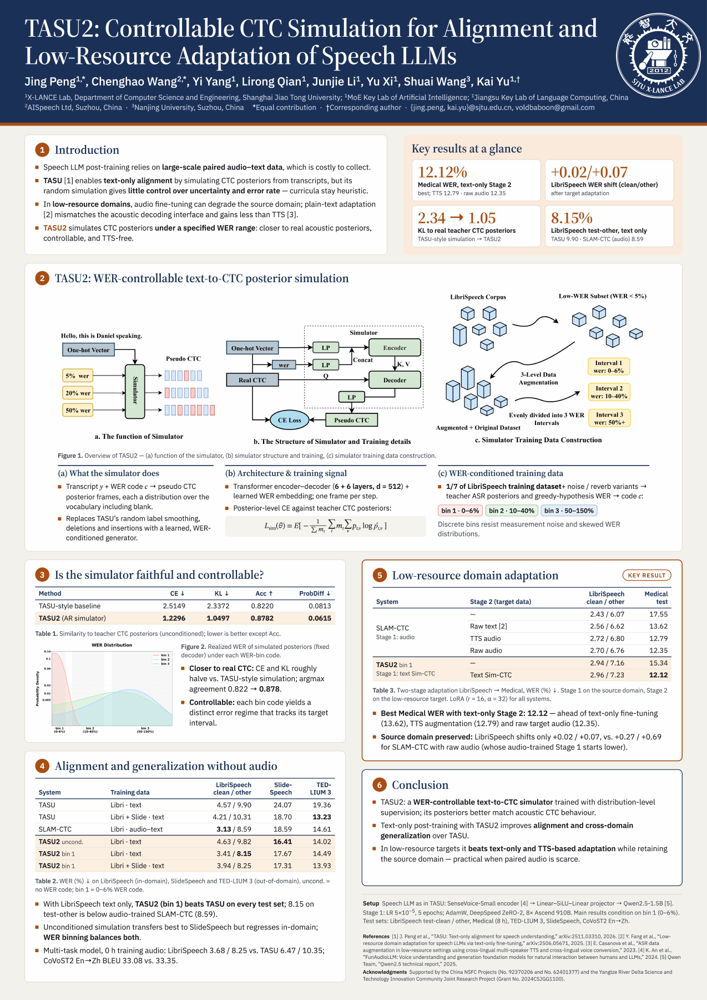

TASU
Text-Only Alignment for Speech Understanding
Our long-term goal is to strengthen audio-text alignment so that speech models can benefit from the scale and diversity of text data, with less dependence on paired audio-text supervision.
Interspeech 2026 · Post-Training of Speech Foundation Models
TASU2: Controllable CTC Simulation for Alignment and Low-Resource Adaptation of Speech LLMs
1Shanghai Jiao Tong University 2AISpeech Ltd 3Nanjing University
* Equal contribution. † Corresponding author.
TASU2 generates pseudo CTC posterior sequences from transcripts conditioned on a target word error rate (WER) interval. This brings text-derived supervision closer to the acoustic decoding interface and supports text-only post-training and domain adaptation without TTS.
The simulator itself learns from teacher CTC posteriors obtained from an augmented subset of LibriSpeech audio. Text-only refers to the subsequent speech-LLM training and adaptation stages.

ICASSP 2026
TASU: Text-Only Alignment for Speech Understanding
TASU simulates CTC posteriors from text to align speech and language components, while retaining real-audio inference. TASU2 develops this direction with learned, WER-conditioned simulation.
Read the TASU paper